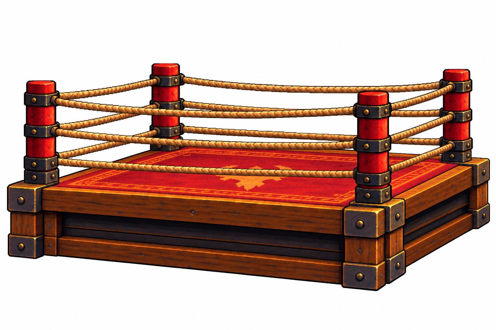
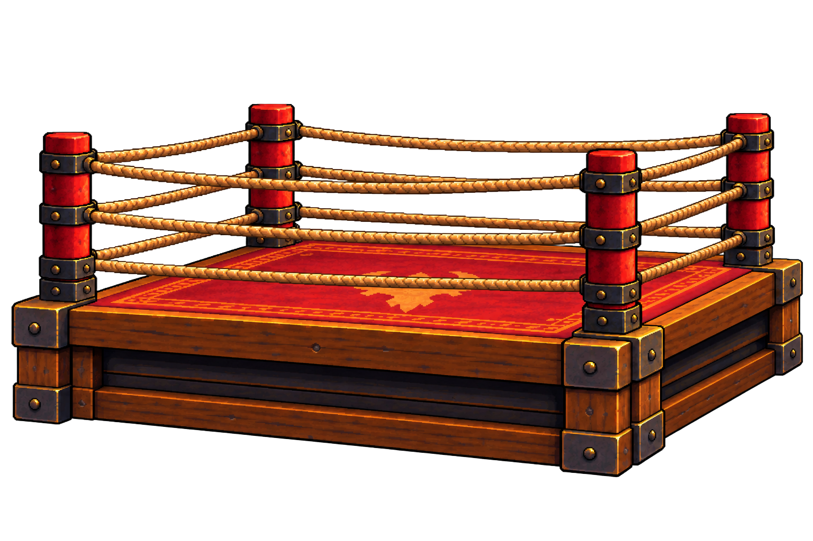

Home iteration 2. Reference authored with built-in imagegen; transparent export produced through AutoSprite. Pending visual review.

Preserve this exact shallow three-quarter camera, wooden platform, oxblood red mat, gold edging and dark iron brackets. Four corner posts, with three continuous tan ropes per side. Keep the whole object, including all formerly hidden sections; no character, punching bag, room or interface. Empty air between ropes and around the platform must remain transparent.
Export one 1536×1024 PNG. Preserve the canvas, floor pivot (768, 121) measured from the lower-left, and the projected floor footprint. Variants change decoration on this same ring. Do not invent a different camera, ring silhouette or attachment placement. The native room definition controls placement and scale.

View actual Unity composition · Exact prompts · Source hashes and AutoSprite record